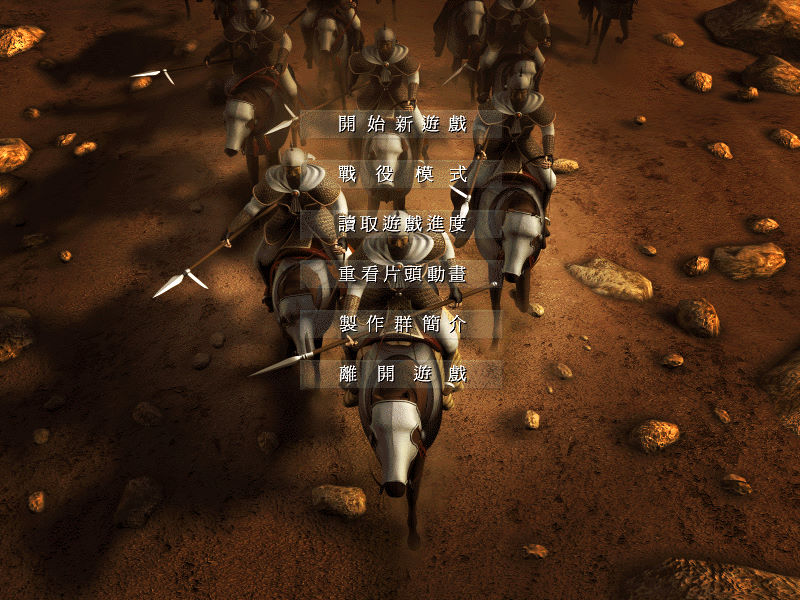
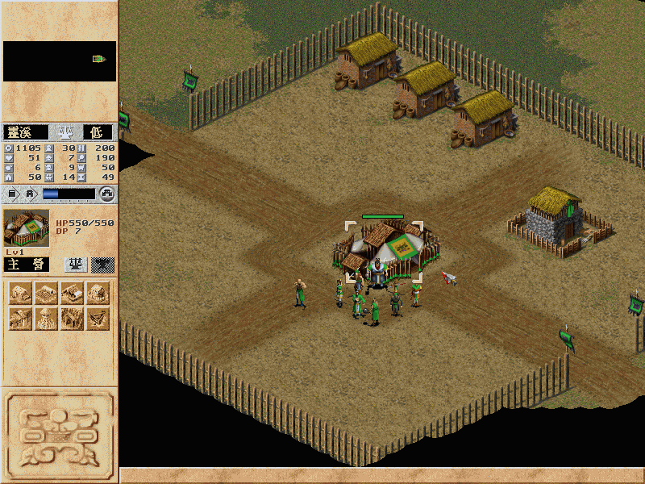
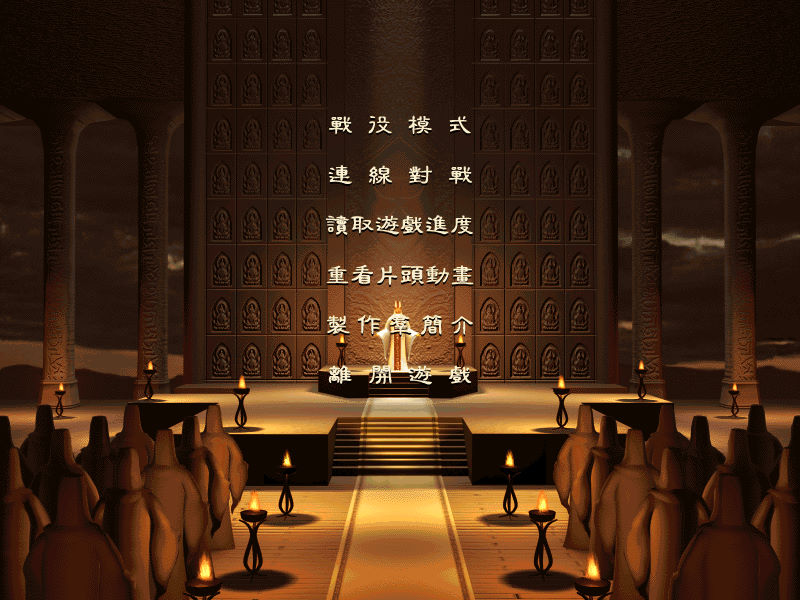

名稱：真命天子 (中文版) 簡介：華義1999年出品的即時戰略遊戲，2000年再推出加強網路對戰的黃金版 [待補]。


保護：原始版為光碟，黃金版為磁片+光碟，破解碼（放入光碟才有背景音樂）： (原始版) Emp.Exe 85 C0 74 20 6A 00 68 -- -- EB -- -- -- -- (黃金版) Emperor.exe 84 C0 75 1E 6A 10 68 -- -- EB -- -- -- -- E8 87 07 00 00 8B 0D 4C 11 54 00 A3 58 61 45 00 05 05 79 29 ED FF 89 -- 58 61 45 -- -- 4C 11 54 -- 2D emperor.net E8 D1 05 00 00 8B 0D 50 18 4A 00 A3 64 64 46 00 05 05 79 29 ED FF 89 -- 64 64 46 -- -- 50 18 4A -- 2D 備註：XP以上系統安裝時要設定SETUP.EXE為Win9x相容。 備註：原始版VirtualBox需搭配DxWnd（不可全螢幕），否則會有貼圖問題，建議使用VMware。 黃金版沒有問題，不必搭配DxWnd。